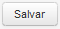
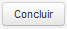

Cadastrar Pessoa Jurídica
Dados Básicos
Informe os dados, observando que os campos com asterísco (*) são de preenchimento obrigatório.
Após informar os dados clique no botão desejado:
Salve as informações editadas, acionando a opção;
Para Salvar e seguir para próxima tela, acione a opção  ;
;
Para Concluir o cadastro, acione a opção  e confirme os dados informados;
Para não registrar os dados informados, acione a opção o sistema retorna para a tela "Pesquisar Pessoa".
o sistema retorna para a tela "Pesquisar Pessoa".

Created with the Personal Edition of HelpNDoc: Create iPhone web-based documentation